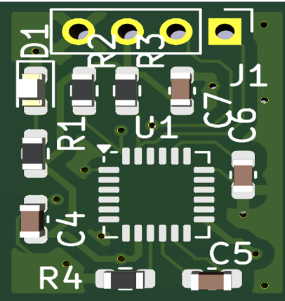
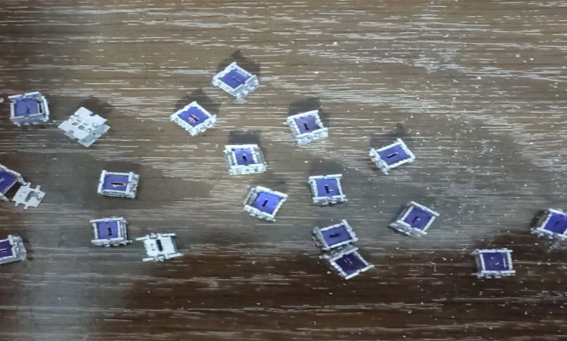
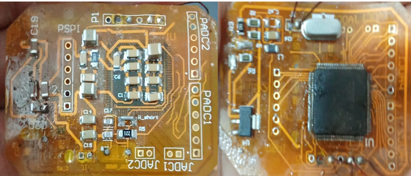
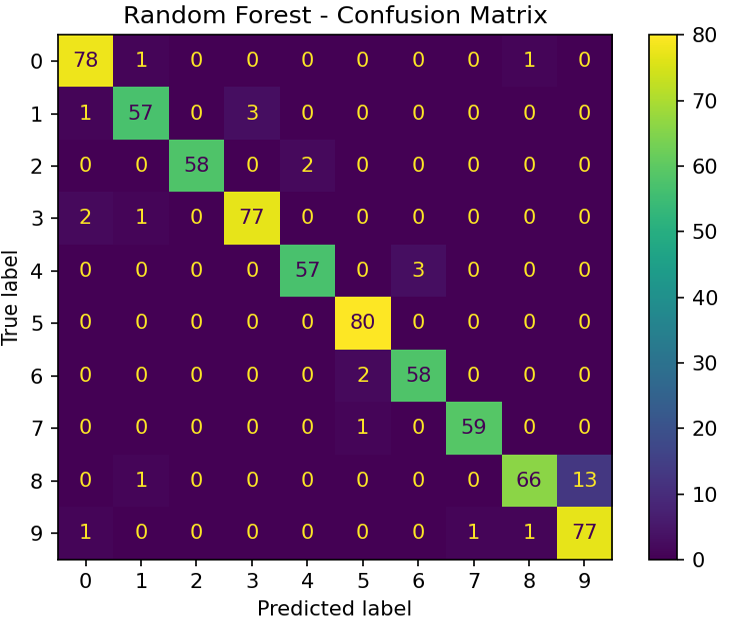

Abstract
The World Health Organization estimates that over 430 million people worldwide need rehabilitation services, and sign language remains the primary means of communication for a large share of them — yet the hearing majority rarely understands it, leaving users socially and economically excluded. A second, related problem sits alongside it: patients recovering from stroke, nerve injury, or hand surgery need repetitive finger-flexion exercises that are often too tedious to stick with. This project designs, builds, and tests an embedded smart glove system that addresses both problems from a single wearable platform.
Two independent glove designs were built and compared. The first instruments a single glove with six MPU-6050 inertial measurement units — one on each finger's proximal phalanx and one on the dorsum of the hand — polled through a TCA9548A I²C multiplexer by an ESP32, which computes a gravity-vector bend angle per finger and streams a compact packet over ESP-NOW to a receiver ESP32 wired to a Raspberry Pi Zero 2 W. There, a 24-dimensional statistical feature vector is built from sliding windows and classified by a trained Random Forest model (95.15% test accuracy, 95.29% 5-fold CV accuracy across 10 gesture classes). The second design is the project's core engineering contribution: a home-fabricated optical linear encoder glove, in which a photolithographically etched and CNC-machined copper aperture strip slides between an LED pair and a BPW34 photodiode at every joint, producing four clean optical states that an STM32F407VET6 decodes directly into a deterministic joint position — no machine learning required. In validation testing this approach reached 100% classification accuracy with under 5 ms of response latency.
Both pipelines terminate in the same Raspberry Pi Zero 2 W, which renders the recognised gesture as on-screen text and speaks it aloud through an offline pyttsx3 TTS engine via a MAX98357A I2S amplifier. A third subsystem — a PyQt5 rehabilitation game in which finger movements steer a car across a five-lane road — turns the same sensor glove into a therapy tool for post-stroke, prosthetic, and neurological rehabilitation patients. The combined system was awarded First Best Project by the Faculty Evaluation Panel, Second Best by the External Evaluation Committee, and the Commandant's Best Project of the Year.
Introduction
Problem Statement
Sign language is the primary mode of communication for a large part of the 430-million-strong global population the WHO identifies as needing rehabilitation services, out of over 300 sign languages in use worldwide. Most hearing people — including teachers, relatives, and healthcare workers — don't understand it, which isolates signers socially and limits education, employment, and healthcare access. Separately, stroke and nerve-injury patients need repetitive finger-flexion physiotherapy that's monotonous enough that many drop out before recovering full hand function.
Proposed Solution
An embedded glove that pursues two parallel sensing strategies rather than one. The first uses six wrist- and finger-mounted MPU-6050 IMUs feeding a trained Random Forest classifier for flexible, retrainable gesture recognition. The second replaces the classifier entirely with a custom-built optical linear encoder — a physical, self-calibrating position sensor at each joint — so gestures are decoded deterministically from geometry rather than inferred statistically. Both speak through the same offline text-to-speech pipeline.
Motivation & Impact
Camera-based sign language recognition struggles with lighting, occlusion, and background clutter; a wearable, camera-free glove sidesteps all three. Building the optical encoder in-house — after 3D printing, EDM wire-cutting, and photolithographic etching all fell short before CNC machining finally worked — was motivated by a desire to remove machine learning from the critical sensing path altogether, so the system doesn't need retraining every time it's worn differently or by someone new.
System Overview
Two separate glove prototypes were built and tested end-to-end. The IMU glove talks to a base-station ESP32 over ESP-NOW; the optical-encoder glove decodes its own joint states on an onboard STM32F407VET6. Both hand their result to a shared Raspberry Pi Zero 2 W, which drives on-screen text and offline speech. A PyQt5 rehabilitation game built on top of the same sensor glove turns repetitive finger-flexion exercises into a five-lane driving game for therapy patients.
System Architecture
The two glove designs share the same downstream destination but take very different routes to get there — one wireless and probabilistic, the other wired and deterministic — before converging on a single Raspberry Pi Zero 2 W for text and speech output.
PCB Designs
All boards were designed in KiCad. Four custom PCBs were needed in total — two for the IMU glove, two for the optical linear encoder glove — each stripped down to only the components the application actually needs.

MPU-6050 Custom Module (IMU Glove)
Stripped-down breakout carrying only VDD, GND, SDA, and SCL out to a 4-pin header — commercial MPU-6050 breakouts were too large to fit six-per-glove. 4.7 kΩ I²C pull-ups and 0.1 µF/0.01 µF/2200 pF decoupling caps sit clear of the die area to avoid parasitic MEMS coupling. Two-layer stack-up, final size 11.75 mm × 15.05 mm.

ESP32 Module with Charging & BMS (IMU Glove)
Built around the ESP32-S3-MINI-1-N8 with a TLV75801P0BV 3.3 V LDO, TP4056 USB-C Li-ion charger, and BOOT/reset tactile switches. Four-layer stack-up (signal / ground / power / ground) keeps the 2.4 GHz RF section clean, with copper cleared from the antenna keep-out area on every inner layer to avoid detuning the PCB trace antenna.

Optical Sensor PCB (Encoder Glove, ×20)
An 8 mm × 12 mm two-layer FR4 board — one per joint — with a pair of 0805 red LEDs and their current-limiting resistor on top and the BPW34 photodiode on the underside, positioned to sit exactly in the housing's 1.5 mm optical aperture. Connects back to the main board through a 0.5 mm-pitch, 4-pin FFC.

STM32 Main Controller PCB (Encoder Glove)
A 60 mm × 60 mm four-layer board aggregating all 20 Sensor PCBs, built around the STM32F407VET6 with onboard power regulation and a USB-to-UART debug bridge. Its 20 ADC inputs are split across the STM32's three independent ADC peripherals for simultaneous scan-mode sampling with zero inter-channel time skew.
Approach 1 — IMU-Based Sensor Workflow
Six-Sensor Placement on a Single Glove
Rather than instrumenting both hands, all six MPU-6050 6-DoF IMUs sit on one glove: five mounted at the proximal phalanx of the thumb, index, middle, ring, and little finger (channels 0–4), plus a sixth on the dorsum of the hand (channel 5) to track overall wrist and hand orientation. Because every MPU-6050 exposes only two selectable I²C addresses (0x68 / 0x69 via its AD0 pin), six units on one bus need a multiplexer.
I²C Multiplexing — TCA9548A
A TCA9548A 8-channel I²C multiplexer, addressed at 0x70, isolates each MPU-6050 on its own sub-bus. The ESP32 firmware issues a channel-select write before each read, enabling only the target sensor's downstream bus and leaving the other five electrically isolated — repeated sequentially every update cycle to give all six units time-balanced access to a single I²C master.
Gravity-Vector Bend-Angle Estimation
Rather than transmitting raw accelerometer values for downstream processing, the ESP32 computes finger bend angles directly. Each sensor's accelerometer output is normalised into a unit gravity vector; a one-time calibration snapshot — taken with the hand held flat and open — stores this as each finger's neutral reference. Every cycle, the geodesic angle between the current and reference vectors (via the clamped arc-cosine of their dot product) yields a bend angle from 0° (extended) to a hard-clamped 120° (fully flexed), while the dorsal sensor's signed pitch (via atan2) captures palm-up/palm-down orientation.
Adaptive Filtering & Quantisation
Raw bend angles are smoothed with an exponential moving average (α = 0.1) to strip MEMS noise and transient spikes without lagging behind genuine gesture motion. Each smoothed angle is then quantised to a 16-bit integer at 0.1° resolution (0–1200), and packed with the signed hand-pitch float into a 14-byte struct — compact enough to leave plenty of headroom in the update loop.
ESP-NOW Wireless Transmission
The transmitter ESP32 repeats its full sensor-read-to-radio pipeline every 8 ms (~125 Hz), sending the 14-byte packet to a registered receiver MAC address over ESP-NOW — a connectionless, access-point-free 2.4 GHz protocol with no TCP/IP or association overhead. The wireless hop itself takes under 2 ms, keeping total motion-to-radio latency to roughly one update period (≤8 ms), well inside the 200–250 m open-air range of the on-board PCB antenna.
Raspberry Pi Feature Extraction, Classification & Speech
A receiver ESP32 forwards each packet unmodified over UART (115200 bps) to the Raspberry Pi Zero 2 W. There, a Python service buffers the six channels into sliding windows, computes four statistics per channel — mean, standard deviation, mean absolute derivative, and range — for a 24-dimensional feature vector, standardises it, and feeds it to the pre-trained Random Forest model. The predicted label appears on screen and is spoken aloud through pyttsx3 (offline eSpeak) via a MAX98357A I2S amplifier and 4Ω/3W speaker, with the full gesture-to-speech turnaround landing around 100–300 ms.
Approach 2 — Optical Linear Encoder (Novel Sensor Design)
Motivation — Why Look Past IMUs and Flex Sensors
IMU- and flex-sensor gloves work, but their signals drift with temperature, wear position, and time, which means the classifier needs periodic retraining to stay accurate across users and sessions. The team wanted a sensor that produced clean, repeatable, deterministic joint positions directly — turning gesture recognition into a lookup problem instead of a pattern-classification one. That led to the idea of a miniature optical linear encoder at every joint: a use of optical encoding principles that, as far as the literature review found, had not previously been applied to wearable finger-joint sensing.
Working Principle — Transmissive Optical Encoding
Each sensor unit shares an optical axis between two 0805 red LEDs (625 nm, wired in parallel through a shared 180 Ω resistor, ~7.2 mA per branch) and a BPW34 silicon PIN photodiode run in reverse bias for speed. Between them slides a copper strip etched with a repeating, asymmetric pattern of small, medium, and large apertures. As a joint flexes, the strip moves linearly through the light gate, producing one of four discrete optical states — 0 (opaque, no light) through 3 (largest aperture, maximum light) — so a single channel encodes both the magnitude and direction of joint motion with no separate direction sensor needed.
The Fabrication Journey — Four Attempts to Get One Strip Right
3D printing came first — quick to prototype, but the printed material diffracted light instead of absorbing it, blurring the boundaries between optical states beyond reliable discrimination. EDM wire-cutting was tried next on copper sheet; the wire kept snapping under the thermal and mechanical stress of such fine features. Photolithography with FeCl₃ chemical etching — UV-exposing a photoresist-coated copper mask, developing it, then etching at 45°C — finally produced sharp, accurate apertures, but batch-to-batch etch time and resist adhesion were hard to control consistently in a non-dedicated lab, so yield stayed low. After JLCPCB confirmed the tolerances were beyond their standard CNC capability, a fortunate break came through: another final-year team's self-built CNC machine, which finally delivered strips to the required dimensions — combined with photolithography for the very finest features — giving a complete, repeatable fabrication process.
Housing & PCB
Each sensor sits in a small 6061-T6 aluminium enclosure, CNC-machined to keep the LED, strip slot, and photodiode co-axial while blocking ambient light. The strip's linear slot holds ±0.05 mm parallelism over a 20 mm length with 0.3 mm guide rails to stop lateral yaw, and the whole housing clips onto the glove via a spring-loaded, Velcro-compatible 3D-printed PLA mount. Electronics for each joint live on an 8 mm × 12 mm Sensor PCB, aggregated by a 60 mm × 60 mm four-layer Main Controller PCB carrying the STM32F407VET6.
Sensor Placement — 20 Degrees of Freedom
Encoders sit at the MCP, PIP, and DIP joints of the index, middle, ring, and little fingers, at the equivalent thumb joints, and at additional points capturing wrist flexion and finger abduction/adduction — 20 tracked degrees of freedom in total. A form-fitting spandex glove substrate keeps sensors from shifting between gestures, while rigid 1 mm ABS link plates bonded across each joint convert the joint's angular rotation into the strip's linear displacement.
Signal Processing & Deterministic State Decoding
The STM32F407VET6 scans all 20 ADC channels simultaneously via DMA at 10,000 samples/sec/channel, spread across its three ADC peripherals to remove inter-channel skew. A 16-sample moving-average filter (~277 Hz cutoff) knocks out high-frequency noise while leaving the sub-20 Hz motion band untouched, and hysteresis-protected thresholds — auto-calibrated at startup against each channel's own opaque and full-aperture extremes — classify each reading into one of four states. State transitions drive a signed position counter (~5° of joint rotation per count), and the resulting per-finger state codes concatenate into a single gesture "state word" that a lookup table maps directly to a label and TTS phrase — no trained model in the loop at all.
Gesture Dataset & Vocabulary
The IMU-based classifier is trained on 3,501 labelled samples across ten PSL gesture classes, referenced against video signs from the psl.org.pk dictionary. Five classes — a, b, Asalam O Alaikum, My name is Basit, and Thank You — have 400 samples each, while five directional/phrase classes — Up, Down, Left, Right, and We are Electrical Engineers — have 300–301 samples each, a modest ≈1.33:1 imbalance the classifiers proved robust to. Deliberate variation in signing speed, hand placement, and wrist rotation across trials was encouraged to improve generalisation. Each sample's six raw channels (five finger bend angles + hand pitch) are reduced to four statistics per channel — mean, standard deviation, mean absolute derivative, and range — for a 24-dimensional feature vector, split 80/20 (2,800 / 701 samples) with stratified sampling and evaluated under 5-fold cross-validation. The optical linear encoder approach recognises the same ten classes but needs no training dataset at all — each gesture maps to a unique, pre-calibrated joint-state word in a deterministic lookup table.
ML Model Selection & Implementation
🌲 Random Forest — Implementation
Results

Comparative discussion. The IMU + Random Forest pipeline is the more scalable of the two — adding a new gesture just means collecting samples and retraining. The optical encoder trades that flexibility for determinism: because gestures are decoded from physical joint geometry rather than inferred statistically, its classification is zero-latency and immune to the model-generalisation errors an ML pipeline can make, at the cost of being constrained to gestures whose finger-state combinations are distinct enough to look up uniquely — a constraint satisfied by all ten gestures tested here.
The lowest per-class F1-score for the Random Forest model was 0.89, on 'Down' — a gesture whose multi-finger transitions carry more inter-sample variability than most. As a genuinely first-of-its-kind application of transmissive optical encoding to a wearable glove, the optical sensor's mechanical complexity means it hasn't yet reached its full performance ceiling as a piece of everyday hardware, even though it hit a clean 100% with zero misclassifications under controlled validation testing — the team considers the novel sensor and state-decoding architecture itself the project's main engineering contribution, ahead of either classifier.
Rehabilitation Game Module
🎮 About the Module
The rehabilitation module is a PyQt5 desktop application built around two classes: GameCanvas, which owns sensor integration, physics, and rendering, and MainWindow, which lays out the score, elapsed time, and serial connection status. It's aimed squarely at people with finger-flexion limitations — post-stroke and neurological rehabilitation patients, prosthetic-limb users, and elderly patients — for whom conventional repetitive physiotherapy is often too tedious to stick with.
A background thread reads the glove's serial stream (115200 bps) without ever blocking the game's 30 ms/frame animation loop. Five sensor channels — one per finger — are read continuously and passed through a signal-processing pipeline before they're allowed to move the car:
Key Features
- Five-lane scrolling road with a player car, falling barrier obstacles, and scrolling tree scenery
- Thumb steers to lane 1, then index, middle, ring, and little finger to lanes 2 through 5 in order
- Barriers spawn in a random lane and fall at a constant speed; dodging one adds +1 to the score
- Progressive difficulty — obstacle speed increases as the score climbs, pushing faster, more deliberate flexion
- Collision triggers a game-over state and a three-frame sprite explosion at the car's position
- Non-blocking serial architecture keeps the 30 ms/frame game loop smooth regardless of glove I/O
- Score and elapsed session time are logged for therapists to track patient progress over time
- Low cognitive load, high-contrast interface designed to be accessible to elderly patients
- Fully offline — the entire therapy session runs with no internet connection required
Achievements
Best Project — Faculty Evaluation
Nominated First Best Project by the departmental faculty evaluation panel, recognising the system's technical depth, hardware-software co-design, dual sensing architecture, and real-world applicability in assistive communication technology.
Best Project — External Evaluators
Ranked Second Best by the two-member external evaluation committee, commended for the from-scratch optical linear encoder design, robust custom PCB work across both gloves, strong classification results, and the rehabilitation game's therapeutic value.
Commandant's Best Project of the Year
Awarded the highest institutional recognition — the Commandant's Best Project of the Year — for outstanding engineering innovation, measurable societal impact, and exemplary execution across the entire cohort of final year project submissions.